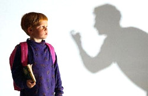

Como actuar en caso de propuestas inadecuadas
La
mejor forma de evitar ser víctimas de personas con intensiones
inadecuadas, es alejándose de ellos, y alertando a otros adultos
sobre el incidente.
Estos son algunos comportamientos propios de este
tipo de individuos, a los cuales debes aprender a reconocer, para
actuar de manera certera:
- En las salas de juegos recreativos no aceptes que un desconocido te pague algunas partidas o te rete a jugar contra él. Los abusos no se producen en el primer encuentro, normalmente intentan ganarse primero tu confianza. Tampoco aceptes invitaciones a comer o idas al cine.
- Si algún desconocido te ofrecen trabajo y asegura dinero fácil, pídele que primero hablen con tus padres o responsables, antes de aceptar nada.
- A salir de tu colegio o liceo, permanece en grupo hasta que te vengan a buscar, o si te vas por tu propia cuenta camina por calles transitadas y donde haya mucha gente. No le creas a nadie que se haga pasar por un conocido de la familia que viene a buscarte.
- Tampoco te acerque a vehículos para indicarles donde está una calle, dile que pregunten a un adulto.
- En discotecas, algunas redes de tráfico de menores captan menores utilizando a otros que actúan de ganchos. Por lo tanto sal en grupos, y evita irte con una persona que hayas conocido allí, así sea de tu misma edad.
- A través de Internet, personas inescrupulosas y con malas intensiones se introducen en los canales de conversación escrita de Internet, o "chats", haciéndose pasar por niños o niñas en busca de nuevos amigos, por lo cual: No aceptes citas por estos medios.
- No envíes ni recibas fotos o imágenes por Webcams, mucho menos de desnudos.
- Conserva tu anonimato, evitando dar direcciones, pines o números de teléfonos a quienes no conoces.
- No pongas en sitios públicos, fotos de tu escuela, casa, u otro lugar donde te puedan localizar fácilmente.
- Si no conoces bien sobre esto busca información con un adulto de confianza. Esto también aplica para las revistas para niños y adolescentes en las que se publican secciones donde otros se ofrecen para intercambiar correspondencia, incluyendo datos personales (dirección, etc...) e incluso una foto.
- En las ferias y demás lugares similares, evita andar solo y no te subas con extraños en juegos o aparatos, así ofrezcan pagarte el boleto.
- En el interior de los almacenes o centros comerciales, permanece cerca de tus padres, o grupo de amigos, y de ninguna manera aceptes de extraños regalos o invitaciones.
Lo más importante es que estés alerta ante el comportamiento anormal de otras personas, los adultos por lo general no se acercan insistentemente a los niños y jóvenes desconocidos, por lo cual si notas algo irregular denúncialo de inmediato a una figura de autoridad, o dile a tus padres o responsables.